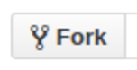

A Brief Git & GitHub Walkthrough
This short tutorial shows how to use git with a GitHub workflow. A quick Google of "git workflows" shows many, diverse results. This article describes just one of the ways of using git with a git-hosting service like GitHub.
In this document, the $ symbol, represents the prompt. The editor used in this tutorial is vi. A short introduction to vi is located at http://www.nuxified.org/visurvivalguide.
Basics
Initial Use
To make things easier later on, you'll need to create a .gitignore file. The .gitignore file specifiles files that will be excluded from the repository. Some of these are binary files, and error messages that are generated during compilation.
.gitignore files are specific to a project type. A good place to start in determining what a .gitignore file should contain is http://gitignore.io. Specify the type of project in the field, then click Generate, then copy the output to your clipboard.
Create a directory for the project, then cd into it:
$ mkdir foobar
$ cd foobar
Edit the .gitignore file in the current directory:
$ vi .gitignore
Then, paste the contents that you have copied earlier.
You may now initialize the Git repository:
$ git init
Initially, add all the files in the current directory:
$ git add .
Then, commit the changes:
$ git commit -m "Short description of your changes."
Subsequent Uses
This section describes the basic commands that you're going to use, when you already have a repository.
Create a branch that will hold your changes:
$ git checkout -b experimental
If you want to add a file to the repository:
$ git add Blah.java
When you have made changes to your files, stage them:
$ git add -u
To display the changes that you have staged:
$ git diff
To commit the changes:
$ git commit -m "Summary of your modifications."
To display the commit log:
$ git log
To display the list of commit messages, with the diffs:
$ git log -p
When you've tested your changes to be stable, switch to the master branch:
$ git checkout master
Then merge with experimental:
$ git merge experimental
After that, you may delete the experimental branch:
$ git branch -d experimental
Working Online
This section describes how to work with other developers. You're going to use GitHub in this discussion.
Generate your SSH keys
You need to be able to authenticate yourself to your GitHub account, before you can push changes. To do that, you need to create your SSH keys. To do that, run the following command. Make sure that you supply a passphrase, when prompted:
$ ssh-keygen -t rsa
After you have created your keys, you need to add that key to your GitHub account. To do that, run the following command then copy the output:
$ cat ~/.ssh/id_rsa.pub
Go to https://github.com/settings/ssh, then click Add SSH key
Paste the key, then follow through.
Creating a Repository
In your repositories page, create a new repository by clicking on New
Follow through the prompts. When you have filled in the required fields, you'll get a string of commands. Replace shoryuken and foobar with your GitHub username, and the name of the repository that you have created, respectively:
$ git remote add origin git@github.com:shoryuken/foobar.git
$ git push -u origin master
You'll be prompted to supply the passphrase you have entered above. The git push command uploads the contents of your repository to the remote repository.
Updating your Repository
When you have made further changes to the repository, you may push your changes with the command:
$ git push origin master
Participation
If you want to contribute to a project, you'll need to work on a copy of that repository, then push changes to your own fork.
First, fork the project. Go to the project that you want to fork, then click the Fork button

This will create a copy of a repository in your own GitHub account.
Next, you need to clone that forked project, to your local disk. Copy the URL located in the SSH clone URL field:
then run the following command, where hadoken is your username:
$ git clone git@github.com:hadoken/foobar.git
Next, create a remote that will track changes from the source repository.
$ git remote add upstream git@github.com:shoryuken/foobar.git
When you want to make changes to the code, create a separate branch. Use a branch name that is descriptive of the changes that you want to make. This name can be changed later. In this example, we'll create a branch named baz:
$ git checkout -b new-options
You may now make changes to the files in this branch. When you've committed your changes, push the changes to your fork:
$ git push origin new-options
If you want the source repository to merge your changes, create a Pull Request by going to the source repository's page, then click on Pull Requests.
On the next page, click on New Pull Request:
Select compare across forks:
In the left side, under the base fork field, select shoryuken/foobar, and in the base field, select master. In the right side, under head fork field, select hadoken/foobar, and in the compare select new-options, or whatever name you used above. Click Create pull request

then follow through.
Synchronizing with Upstream
To synchronize the upstream branch with the source repository, pull changes from the upstream remote:
$ git pull upstream master
Then push to your own repository:
$ git push origin master
Pulling Changes
If you are the owner of the source repository, and you want to pull in changes from contributors, click Pull requests
from the repository page, then follow through.
Merging with Upstream
If you are a contributor, and your changes have been pulled in the source repository, synchronize your upstream branch:
$ git pull upstream master
At this point, you may delete the new-options branch you have created earlier:
$ git branch -d new-options
Closing Remarks
The workflow described in this document is only one of the many usable workflows that one can use. This document serves as an introduction for people who are new to Git and GitHub.
Copyright © Rommel M. Martinez